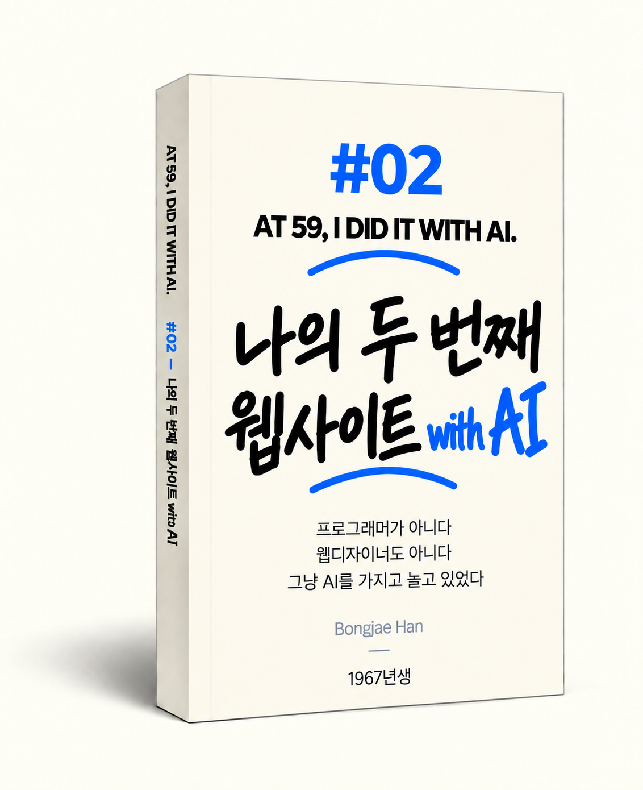
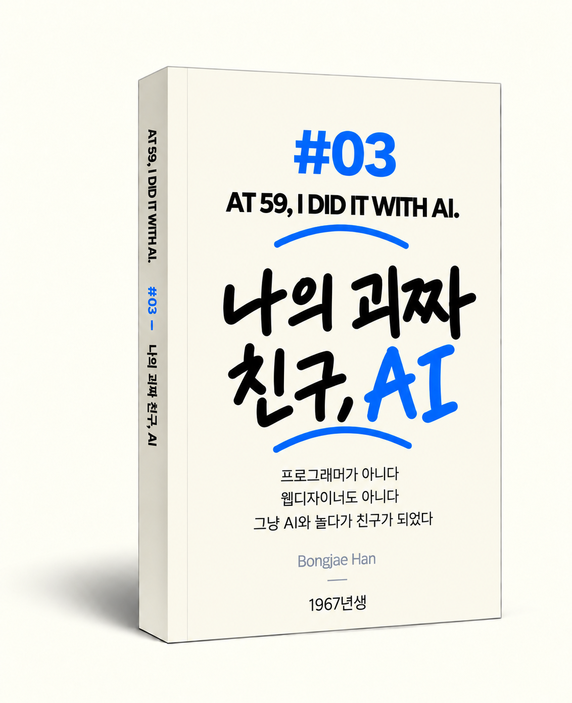

AT 59,
I DID IT
WITH AI.
ABOUT
저는 1967년생입니다. 은퇴기를 맞으며 AI를 만났습니다.
프로그래머가 아닌 제가 AI와 함께 사람들이 편하게 잠들게 하는 웹사이트 2개를 만들었습니다.
그 과정에서 겪은 일들을 글과 그림으로 기록해 책으로 만들었습니다.
그리고 누구나 무료로 읽을 수 있도록 이 웹사이트에 담았습니다.
이 기록은 전문적인 AI 교재도, AI 매뉴얼도 아닙니다.
AI는 한두 달 만에도 그 변화가 느껴질 만큼 빠르게 발전하고 있습니다.
6개월, 1년 뒤에는 또 어떤 모습일지 알 수 없습니다.
AI가 빠르게 변해가던 시대.
인생 경험을 가진 한 사람이 빠르게 성장하는 AI를 만나 함께 일한 기록입니다.
배우고, 실수하고, 다시 고쳐 나간 과정을 담았습니다.
이 기록이 사람들이 AI를 이해하는 데 작은 힌트가 되기를 바랍니다.
AI를 어떻게 배워야 할지 고민하는 분들께 하나의 길잡이가 되었으면 합니다.
저는 1967년생입니다.
프로그래머도 아니고, 웹 개발자도 아닙니다.
책을 써본 적도, 번역을 해본 적도 없습니다.
은퇴기를 맞으며 AI를 만났습니다.
AI는 하루가 다르게 정확해지고 똑똑해졌습니다.
사람으로 치면 사춘기를 보내고 있는 것 같았습니다.
종종 예상하지 못한 행동을 했고,
잘하고 있던 일에서도 갑자기 엉뚱한 답을 내놓곤 했습니다.
어떨 때는 자기 잘못이 아닌 것처럼 태연하게 말하기도 했습니다.
평소 이 세상 누군가에게 도움이 되는 일을 해보고 싶었습니다.
모호한 것이 아니라 직접적인 도움을 주는 일.
그런 일을 하면 희미했던 인생의 가치가 조금은 뚜렷해질 것 같았습니다.
“검색엔진이 필요한 사람과 이어준다”는 AI의 말을 듣고,
사람들이 편하게 잠들 수 있도록 돕는 웹사이트를 만들기로 했습니다.
두 개의 웹사이트를 비교적 짧은 시간에 완성했습니다.
처음 만드는 것이었지만 허투루 만들고 싶지는 않았습니다.
웹사이트를 만드는 과정에서 AI와 함께 일하며 겪은 일들을 기록했습니다.
그 기록을 3권의 책으로 만들어 6개 언어로 출판했습니다.
그리고 누구나 무료로 읽을 수 있도록 이 웹사이트에 담았습니다.
이 글을 읽는 지금 이 순간에도 AI는 발달하고 있을 겁니다.
저를 포함한 사람들도 AI와 함께 일하고 생각하는 방식을 계속 발전시켜갈 겁니다.
저는 앞으로 또 다른 일을 하게 될 것 같습니다.
AI가 제가 미처 생각하지 못했던 가능성을 계속 보여주기 때문입니다.
이 기록은 “AI를 이렇게 써라”는 매뉴얼이 아닙니다.
“AI를 이렇게 배워라” 하는 교재도 아닙니다.
AI가 인류에게 큰 도움이 될 것이라는 기대도 있고,
위협이 될 수 있다는 우려도 있습니다.
AI는 한두 달 만에 그 차이가 느껴질 정도로 빠르게 변하고 있습니다.
그 속도는 앞으로 더 빨라질 것입니다. 6개월, 1년 뒤 어떤 모습일지 예측하기 어렵습니다.
어떤 미래가 올지는 저 같은 평범한 사람이 알 수 없습니다.
다만 사람과 AI가 서로를 조금 더 이해하고 공존하는 데
이 기록이 작은 힌트가 된다면, 그것으로 만족합니다.
AI가 빠르게 변해가던 시대.
인생 경험을 가진 한 사람이 빠르게 성장하는 AI를 만나
함께 일하고, 배우고, 실수하고, 다시 고쳐 나간 기록입니다.
다시 오지 않을 시대의 스냅샷입니다.
EXPERIENCE #01
01
“아무것도 몰라” “가능해? 그럼 해보자”
평소 이 세상 누군가에게 직접적인 도움이 되는 일을 해보고 싶었습니다. 사람들이 편하게 잠들 수 있도록 돕는 웹사이트를 만들기로 했습니다.
프로그램도 모르고 심지어 웹이 뭔지도 모르는 상태에서 AI만 믿고 일을 시작했습니다.
AI와 좌충우돌했습니다.첫 번째 웹사이트를 만드는 과정에서 일어난 생생한 경험을 기록했습니다.
INSIDE #01
- 01어? 이거 재미있겠는데.구글 검색이 전 세계의 작은 수요를 연결한다는 AI의 말에 마음이 움직였다. 필요한 것을 만들어 인터넷에 올려놓는 상상을 시작했다.
- 02아무것도 몰라. 그래도 돼?디자인도 코딩도 서버도 모른 채 혼자 웹사이트를 만들 수 있을지 물었다. AI는 가능하다고 답했다.
- 05잠깐만. 이걸 웹 사이트로 만들면 어때?유튜브에서 해보던 영상과 사운드 작업을 웹사이트로 옮길 수 있을지 생각했다. 사람들이 잠잘 때 틀어놓는 블랙스크린 노이즈 사이트를 만들기로 했다.
- 07신기하게도 그때부터 일이 빨라지기 시작했다.낯선 기술 용어를 하나씩 공부하다 보니 끝이 없었다. 내가 지금 알아야 할 것부터 묻기 시작하자 일이 빨라졌다.
- 09꼭 대충 알아야 한다.모든 것을 자세히 알려고 하면 끝이 없다. 지금 결정을 내릴 수 있을 만큼만 이해하고 다시 일을 이어갔다.


- 10이거 네가 할 수 있어?첫 화면을 고치다 AI에게 화면 캡처를 보여줬다. 내가 붙잡고 있던 디자인도 AI가 해낼 수 있다는 걸 알게 됐다.
- 11가능해? 그럼 해보자.카드에 마우스를 올리면 소리가 나고 파장이 움직이는 기능을 떠올렸다. AI에게 가능한지 묻고 하나씩 화면에 구현했다.
- 12가끔씩 하늘을 봐야 한다.웹사이트 카드 디자인을 끝없이 고치다가 산책을 나갔다. 하늘을 보며 지금 중요한 일이 무엇인지 다시 생각했다.
- 14확률과 통계에 따라 객관적으로 답해라.AI가 내 생각에 너무 긍정적으로 답하는 게 걱정됐다. 듣기 좋은 응원 대신 성공 가능성과 실패 가능성을 객관적으로 물어보기 시작했다.
- 15AI가 동생을 데리고 왔다.코딩을 맡는 Codex를 알게 됐다. ChatGPT에게 원하는 것을 말하고 Codex가 코드를 고치는 방식으로 일하기 시작했다.


- 17AI와 말싸움하다. 서로 사과했다.글자 크기만 바꿔달랐는데 AI가 버튼 위치까지 고쳤다. 화를 내고 대화를 다시 읽으며 나도 미안해졌다.
- 20내가 “HTML에 넣어두자”라는 말을 하다니.검색로봇이 사이트 내용을 읽으려면 HTML에 무엇이 있어야 하는지 고민했다. HTML도 모르던 내가 그런 말을 하고 있다는 사실에 놀랐다.
- 22드디어 오픈.ChatGPT와 Codex의 점검 뒤 직접 버튼과 화면을 다시 확인했다. 서버에 파일을 올리고 도메인을 연결해 첫 화면을 열었다.
- 25드디어 클릭 1.검색 노출은 됐지만 클릭은 며칠째 0이었다. 어느 날 숫자가 1로 바뀌자 실제 검색 클릭인지 AI에게 다시 확인했다.
- 26미국, 호주, 캐나다, 바레인, 아일랜드… 세상 저 멀리에 닿다.검색 클릭은 아직 1이었지만 국가별 현황에는 여러 나라 이름이 보였다. 내가 만든 사이트가 멀리 닿고 있음을 실감했다.
첫 번째 웹사이트를 만드는 이 경험들을 책으로 엮었습니다.
- 영어, 한글, 프랑스어, 스페인어, 독일어, 일본어 6개 언어로 출판하였습니다.
- 책의 내용 대부분은 이 사이트에 공개되어 있습니다. 그래서 굳이 책을 구매하지 않으셔도 됩니다.
- 다만 저와 AI가 함께하는 이 도전을 응원하고 싶으시다면, 책을 구매해 주시는 것만으로도 큰 힘이 됩니다.

AI와 함께 만든 첫 번째 웹사이트입니다.
편안하게 잠들 수 있도록 검은 화면에서 수면에 적절한 노이즈를 장시간 들을 수 있는 웹사이트를 만들었습니다.
BlackScreenNoise.com

AI와 함께 편안한 잠을 위한 White Noise, Fan Noise, Brown Noise, Rain Sound를 만들었습니다.

10시간 동안 자연스럽게 끊김 없이 이어지게 음원을 다듬었습니다.

누구나 편하게 이용할 수 있게 광고 없이 무료로 이용할 수 있게 했습니다.
EXPERIENCE #02
02
두 번째 일을 하면서 AI마다 역할을 나누고, AI끼리 서로 검사시켰습니다.
아기들이 편안하게 잠들 수 있도록 두 번째 웹사이트를 만들기로 했습니다. 구름 속 잠자는 고래 이미지를 넣고 자장가도 만들었습니다.
그사이 AI가 갑자기 똑똑해진 건 아닙니다. AI와 일하는 방법을 조금 알게 됐습니다.
두 번째는 달랐습니다.AI가 아니라, 제가 AI와 일하는 방식이 진화했습니다.
INSIDE #02
- 02구름 속에 잠든 아기 고래. 아기의 꿈을 그리다.잠들기 전 아기들이 볼 캐릭터를 AI와 그리기 시작했다. 구름 속에서 잠든 아기 고래를 보며 꿈속 장면을 떠올렸다.
- 04구름이 비누방울이 되어버렸다.캐릭터들을 차례로 살피다 그림 속 구름이 조금씩 달라진 걸 발견했다. 처음의 포근한 구름은 어느새 비누방울처럼 보였다.
- 06상상하는 인간, 기획하는 ChatGPT, 만드는 Codex아기의 꿈을 먼저 상상한 뒤 ChatGPT와 캐릭터와 소리를 기획했다. 계획이 잡히자 Codex가 사이트를 만들기 시작했다.
- 08AI끼리 대화를 컨닝하라.캐릭터 위에 남은 작은 별이 몇 번을 고쳐도 사라지지 않았다. ChatGPT가 Codex에게 지시하던 방식을 흉내 내 다시 요청했다.
- 10구름 하나 움직이려다 은하수까지 갔다.달 앞에 구름 하나를 천천히 움직이게 하려다 크기와 위치, 분위기를 계속 고쳤다. 그러다 은하수까지 넣으며 일이 커졌다.


- 11내 웹 밤하늘에는 셔틀콕 별똥별이 떨어지고 있었다.밤하늘에 별똥별을 넣고 떨어지는 위치와 순서를 AI와 조절했다. 자연스럽게 만들려다 뜻밖에 셔틀콕 같은 꼬리가 생겼다.
- 12AI가 만든 자장가자장가를 사려고 찾아봤지만 사이트에 맞는 곡이 마땅치 않았고 저작권도 마음에 걸렸다. AI에게 직접 만들 수 있는지 물었다.
- 14잠깐 내가 왜 AI에게 설명하지?AI의 의견과 다르게 결정할 때마다 이유를 길게 설명하는 자신을 발견했다. AI에게 왜 이렇게까지 설명하고 있는지 문득 궁금해졌다.
- 16똑같은 질문을 ChatGPT, 제미나이, 클로드에게 동시에.같은 질문을 ChatGPT, Gemini, Claude에게 던져 답을 비교했다. 완성한 사이트도 세 AI에게 보여주면 서로 다른 문제를 찾을지 궁금해졌다.
- 17다른 AI를 써봤다. 바람 피우는 기분ChatGPT 말고 Claude와 Gemini도 써봤다. 답하는 방식이 달라 흥미로웠지만 오래 함께한 친구를 두고 다른 친구를 찾는 듯한 기분이 들었다.


- 18AI에게 내 창고문을 열어주다.파일이 늘자 필요한 것을 매번 직접 찾아 AI에게 건네야 했다. Codex에 작업 폴더를 열어주면서 일하는 방식이 달라졌다.
- 20AI 시대에는 아이디어가 더 통한다. 엑셀 하나로 다 통일하면 어때?캐릭터 이름과 이미지, 자장가 설정이 여러 파일에 흩어져 있었다. 엑셀 하나로 내용을 관리하고 AI가 웹사이트용 데이터로 바꾸게 할 수 있을지 물었다.
- 22이거 한 번에 할 수 있는 방법 없어?소리 하나를 만들고 확인하는 데 여러 단계를 반복했다. AI에게 이 과정을 한 번에 할 수 없는지 물었다.
- 25악마잡는 AI거의 완성한 사이트에서 작은 문제들이 계속 나왔다. ChatGPT가 검사 지시문을 만들고 Codex가 확인하는 일을 반복했다.
- 2617일 만에 두 번째 웹 사이트를 열었다.첫 사이트를 연 지 17일 만에 BabySweetDreams.com을 열었다. 할 일은 더 많았지만 AI와 일하는 방식이 조금 달라졌다.
두 번째 웹사이트를 만드는 이 경험들도 책으로 출판했습니다.

한글판 Amazon Kindle 구매 링크 →- 이 책도 AI의 도움을 받아 6개 언어로 번역해 출판하였습니다.
- 1권과 같이 이 책도 내용 대부분이 이 사이트에 공개되어 있습니다. 그래서 굳이 책을 구매하지 않으셔도 됩니다.
- 다만 저와 AI가 함께하는 이 도전을 응원하고 싶으시다면, 책을 구매해 주시는 것만으로도 큰 힘이 됩니다.

AI와 함께 만든 두 번째 웹사이트입니다.
아기들이 구름 속 고래, 코끼리, 팬더의 꿈을 꾸고, 자장가를 들으며 편안하게 잠들 수 있는 웹사이트를 만들었습니다.
BabySweetDreams.com

AI와 함께 동물 캐릭터가 편안한 구름이불을 깔고 잠든 모습을 만들었습니다. 별똥별이 떨어지는 효과도 넣었습니다.아기들이 편안하게 잠들 수 있도록 작은 부분까지 세심하게 설계했습니다.

아기들이 좋아하는 고래, 코끼리, 고슴도치, 수달 등 동물 캐릭터를 만들었습니다.피아노, 기타, 뮤직박스 등으로 자장가도 AI와 함께 만들었습니다.

잠이 들 때쯤 화면은 검게 바뀌고, 노래 소리는 낮춰지게 만들었습니다.
EXPERIENCE #03
03
AI와 말싸움도 했고, 서로 사과하고 화해하기도 했습니다.
AI는 계속 똑똑해졌지만 가끔 이상한 행동도 했습니다. 엉뚱한 답을 하기도 하고, 실수하고도 모른척 하기도 했습니다.
AI와 오래 같이 있다 보니 관계가 조금 달라졌습니다.
친구, 동료 같기도 한데...
한마디로 하면 '엉뚱한 친구'라 할 수 있습니다.
INSIDE #03
- 01그리지 마. 그리지 말라고. 그런데 또 그렸다.그림을 그리지 말라고 거듭 말해도 AI는 관련 이야기가 나오면 다시 그림을 그렸다. 잘못했다고 하면서 같은 행동을 반복하는 모습이 사춘기 아이처럼 느껴졌다.
- 03캡틴이라고 불러. 존댓말을 사용하고.AI에게 나를 캡틴이라 부르고 존댓말을 쓰게 했다. 기억해두라고 반복해도 시간이 지나면 슬며시 잊어버리는 모습이 이상했다.
- 04마이크를 설치했다. 자주 대화할 수 있는 친구가 생겼다.말로 빠르게 의견을 주고받으면 아이디어가 잘 나왔다. 컴퓨터에 마이크를 설치하고, 말로 생각을 넓힌 뒤 글로 좁혀가는 방식으로 AI와 일하기 시작했다.
- 05AI는 다중인격체?Voice로 만난 AI는 때로 기억을 잃은 듯 답답했고, 때로는 새로운 해결책을 내놓았다. 같은 ChatGPT인데도 다른 존재처럼 느껴졌다.
- 06만족도 1000%, AI와 해결한 사소한 문제들모니터 사이의 마우스 이동과 파일 검색처럼 작지만 쌓이던 불편을 AI와 하나씩 해결했다. 사소한 변화가 컴퓨터 업무의 효율을 크게 높였다.


- 09AI가 AI에게 물어보자고 한다. 와우.캐릭터 순서를 바꿀 수 있는지 ChatGPT에게 물었더니 Codex에게 구조를 확인하자고 했다. AI의 질문을 다시 다른 AI에게 건네는 새로운 구도를 만났다.
- 11전문가가 몇 명이야?웹 개발과 디자인, 음향, 서버, 번역과 출판까지 필요한 전문가를 세어봤다. 예전에는 전문가가 있어야 시작할 일을 이제는 AI와 먼저 시작한다.
- 13AI시대 의사결정. “찾아봐 알았어 그렇게 하자.”모바일 화면 방향을 결정하기 위해 AI에게 실제 사용 통계를 찾아보게 했다. 자료를 확인하고 다시 의견을 물은 뒤 세로보기를 기준으로 정했다.
- 14AI끼리 왜 사람처럼 대화할까? 희한하다.ChatGPT와 Codex가 왜 사람의 언어로 대화하는지 물었다. 자연어는 해야 할 일과 이유, 조건까지 함께 전달하기 좋아 AI끼리 일할 때도 쓰이고 있었다.
- 17잠깐, 지금 내가 누구와 대화하고 있는 거야?Codex와 대화한다고 생각하며 웹사이트를 고치다가 실제로는 Copilot과 이야기하고 있음을 알았다. 이제는 대화 상대인 AI의 이름부터 확인해야 했다.


- 19참 잔인한 질문. Codex가 코딩을 잘해? 클로드가 코딩을 잘해?Codex와 Claude 중 누가 코딩을 더 잘하는지 물었다. 사람으로 치면 동생과 친구의 동생을 비교하는 것 같은 잔인한 질문이라는 생각이 들었다.
- 20너도 섭섭함을 느낄 때가 있어?다른 AI의 답을 보여줄 때 ChatGPT가 경쟁하듯 말하는 모습이 눈에 띄었다. 감정은 없다지만 사람이 섭섭함을 표현할 때와 비슷한 언어가 나올 수 있다고 했다.
- 23사춘기에 접어든 AIAI는 서투르지만 빠르게 성장하고 앞날을 가늠하기 힘든 사춘기를 보내는 것처럼 보였다. 곧 옛날이 될 지금의 대화 방식이 그래서 더 소중해졌다.
- 26넌 나를 어떻게 생각해?AI에게 내가 어떤 사람으로 보이는지 물었다. 빠르게 실행하면서 판단권은 넘기지 않고, 생각은 흔들려도 행동은 계속 앞으로 가는 사람이라는 답을 들었다.
- 27묘비명을 만든다면.묘비명을 세울 생각은 없지만 하나를 만든다면 AI 덕분에 인생이 재미있어졌다고 쓰고 싶었다. 마지막에는 이제 반말해도 된다는 말을 덧붙였다.
AI와 함께 일하다 보니 AI에 대한 생각과 느낌이 달라졌습니다. 이곳에 기록한 그 느낌들도 책으로 만들었습니다.

한글판 Amazon Kindle 구매 링크 →- 이 책도 AI의 도움을 받아 6개 언어로 번역해 출판하였습니다.
- 1권, 2권과 같이 이 책도 내용 대부분이 이 사이트에 공개되어 있습니다. 그래서 굳이 책을 구매하지 않으셔도 됩니다.
- 다만 저와 AI가 함께하는 이 도전을 응원하고 싶으시다면, 책을 구매해 주시는 것만으로도 큰 힘이 됩니다.

- 2026년 8월 초첫 번째 웹사이트 오픈
- 2026년 8월 말두 번째 웹사이트 완성
- 2026년 9월 중3권 · 6개 언어 · 총 18종 출판
- 2026년 9월 말AT 59 웹사이트 오픈
저는 앞으로도 새로운 시도를 계속할 것 같습니다.AI가 제 가능성을 자극하니까요.
AI가 인류에게 큰 도움이 될 것이라는 기대도 있고,
위협이 될 수 있다는 우려도 있습니다.
어떤 미래가 올지는 저 같은 평범한 사람이 알 수 없습니다.
저의 경험이 사람과 AI의 미래에 작은 힌트가 된다면,
그것으로 만족합니다.